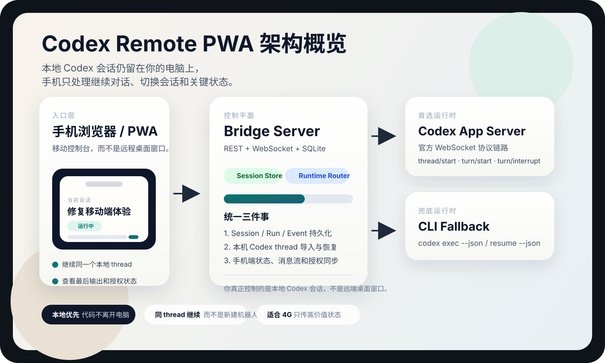
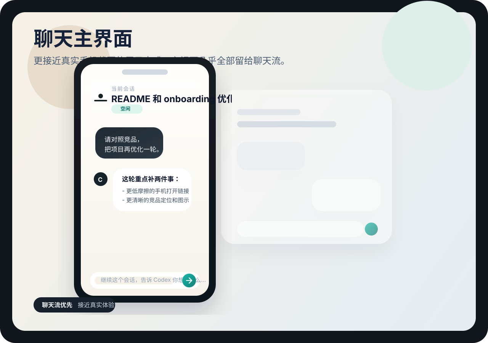
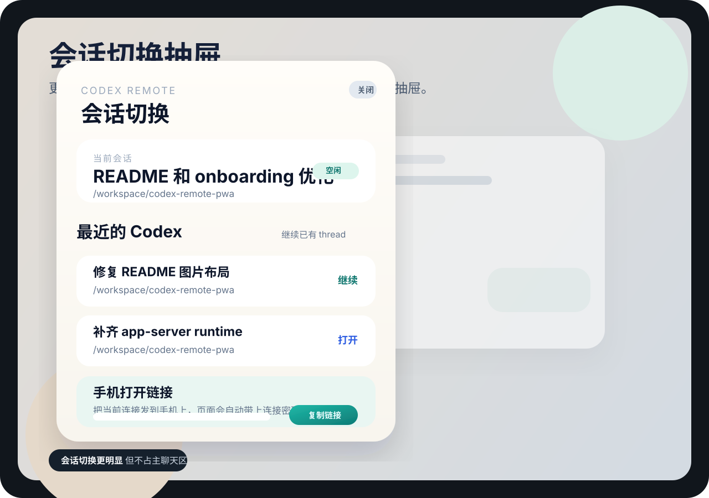

定位
本地 Codex 会话的手机控制面。
电脑上的执行环境不变，手机只是读取状态、发起下一步和处理关键分支。这样可以保留你本来就已经搭好的本地工作流， 而不是再造一套云 IDE。
Why it exists
真正麻烦的不是代码写完，而是你离开电脑以后，仍然要继续盯输出、处理授权、补一句提示，或者确认这次 turn 到底有没有跑完。 这个项目只做这件事，并且尽量把它做得轻。
定位
电脑上的执行环境不变，手机只是读取状态、发起下一步和处理关键分支。这样可以保留你本来就已经搭好的本地工作流， 而不是再造一套云 IDE。
session、run、event 都放在本机 bridge 里，重连后还能接上。
手机只负责真正高价值的动作：继续、打断、授权、查看输出。
代码和执行留在电脑上，不把整个开发环境搬进浏览器。
Product surface
移动端不适合塞满开发环境。它只需要让你继续、观察、打断和确认。
从最近的 Codex thread 里继续，不用每次重新找上下文。
WebSocket 直接流式显示运行状态、日志和最终结果。
长任务可以停住，也可以在确认后接着走，不会把状态丢掉。
把 approval 作为一等事件处理，而不是塞进模糊的提示文字里。
Architecture
这套结构的目标不是做大，而是让本机直连、Relay、Agent 和 app-server 各自只做一件事。

Bridge Server
REST + WebSocket + SQLite 组合成一个本地控制平面，重连时能恢复上下文。
Runtime Adapter
如果 app-server 不可用，再回退到 `codex exec --json`，但 UI 保持不变。
Remote Path
手机不需要直接连本机 8787，适合 Tailscale 或其他受控网络环境。
Security
尽量避免裸露本机端口，减少手机端拿到过多执行权限的风险。
Mobile experience
这也是页面视觉设计的核心：不要把它做成花哨的 dashboard，而是做成真正适合手机连续使用的控制台。


Launch flow
官方 app-server 优先；如果没有，就退回 CLI。两条路都保留，但不强迫你换工作方式。
1. App Server
codex app-server --listen ws://127.0.0.1:8766这是更稳定的首选路径，bridge 会优先使用它。
2. Bridge
BRIDGE_TOKEN=change-me CODEX_APP_SERVER_URL=ws://127.0.0.1:8766 npm run start --workspace @codex-remote/server它负责 session、event、snapshot 和 WebSocket 流。
3. Relay + Agent
npm run start --workspace @codex-remote/agent -- --relay http://127.0.0.1:8788 --pair ABCD1234 --bridge http://127.0.0.1:8787 --token change-me它让手机不必直接碰到本机端口。
Design boundary
这个项目能做得稳，靠的是边界收得足够紧，而不是把一切都塞进去。
不搬运整块屏幕，不模拟手势，不把电脑 UI 硬缩到手机里。
它不重新定义开发环境，代码仍然留在你自己的电脑上。
一个让你在离开桌面后，仍然能继续管理本地 Codex 会话的移动控制台。